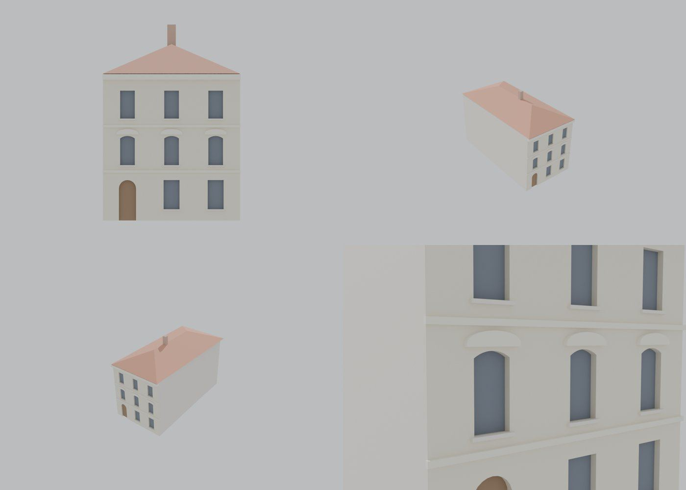

Identita domu
Třípodlažní dům s pilastry a segmentovými frontony vedle nárožního 267.
Použité prameny: fotografie řady 111–267, GIS půdorys.
Přílohy v databázi (5)
Všechny přílohy struktury 266 v databázi Libuše, načtené 18. 10. 2026 a otevřené. Kliknutím otevřete větší náhled.

fotografie
SHA-256 0ebdc835a90e…

pohlednice
SHA-256 b8adcb802c28…

pohlednice
SHA-256 211003d6e8aa…

archivní karta
SHA-256 2bd813fa16fa…

odvozenina (kolorovaná / FRONT)
SHA-256 050253bb34ef…
Geometrie
| Revize geometrie | r4 |
|---|---|
| Poloha | GIS půdorys id 13 (ulice Kulová) |
| Šířka průčelí | 11,19 m |
| Výška okapu | 12,00 m (odhad) |
| Podlaží | 3 |
| Střecha podle pramenů | nízká valba |
| Otvory / vikýře | 9 / 0 |
| Polygonů | 224 |
Kontrolní pohledy

Textury
zatím bez textur
Až Codex dodá texturovaný model, objeví se v prohlížeči nahoře volba Textury (Codex).
Hypotézy
Vše níže je model_hypothesis, provisional, locked: false.
- zkosené nároží nemodelováno (builder nemá chamfer)
- dlouhá fasáda do boční ulice bez otvorů
- identita 265/266 podle GIS pořadí; popisky na fotografii nejsou jednoznačné
Soubory
- Geometrie čp. 266, GLB
- Pracovní model: F:\MOST\output\kulova_5houses_claude_G_2026-10-16\houses\cp266\r4\cp_266_G_r4.blend
- Plán modelu: F:\MOST\output\kulova_5houses_claude_G_2026-10-16\houses\cp266\geometry_plan.json